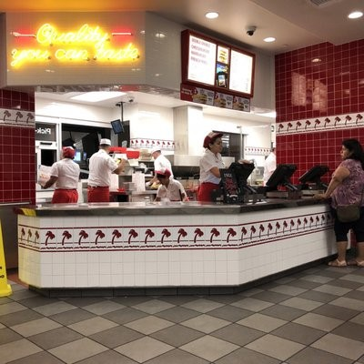
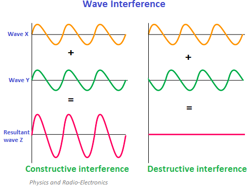
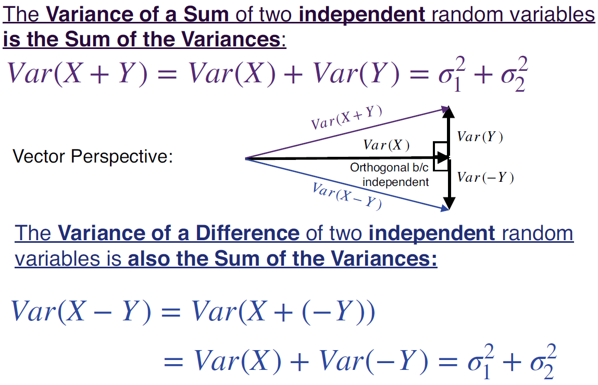
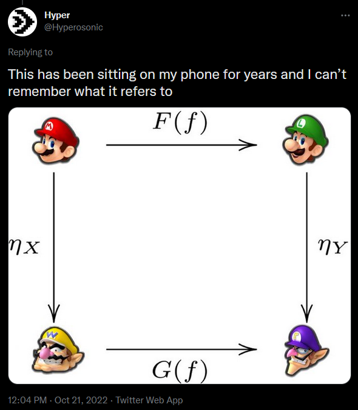

Setting
We will once again visualize the act of ordering food at In-n-Out.
- \(X\): number of fries orders
- \(Y\): number of beef patties ordered


Independence
Are \(X\) and \(Y\) independent?
Covariance
False. In general,
\[\text{Var}(X + Y) = \text{Var}(X) + \text{Var}(Y) + 2\left( \text{E}[XY] - \text{E}[X]\text{E}[Y] \right)\]
As you probably suspected, \(\text{Var}(X + Y)\) does equal \(\text{Var}(X) + \text{Var}(Y)\) if \(X\) and \(Y\) are independent (exercise left to reader).
We define the covariance of random variables as
\[\text{Cov}(X,Y) = \text{E}[XY] - \text{E}[X]\text{E}[Y]\]
As an analogy, the random variables somewhat act like waves in that they can work together and grow or somewhat cancel each other out.

- Image source: https://www.physics-and-radio-electronics.com/physics/waveinterference.html

- Image credit: Bioinformatics professor Dr. David Ardell
Covariance
- Compute the covariance in the In-n-Out setting
Continuous Joint Probability Distribution Functions
We will once again visualize the act of ordering food at In-n-Out.
- \(X\): number of fries orders
- \(Y\): number of beef patties ordered
with joint PDF
\[f(x,y) = \frac{1}{30}(x + y)e^{-x}e^{-y/5}\]
Are \(X\) and \(Y\) independent?
Compute the covariance in the In-n-Out setting
Looking Ahead
due Fri., Mar. 10:
- WHW7
- LHW6
- Internet Connection (survey)
Exam 2 will be on Mon., Apr. 10
no lecture on Mar. 10, Mar. 24
 tweet source